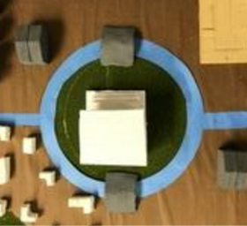
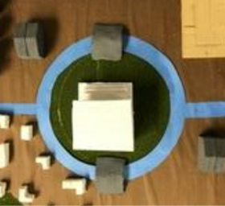

Our courthouse is the main Monument on our civilizations property and really shows and represents what our civilization stands for.
Our city center monument is a law building, the law building is for settling legal disputes, trade, and citizenship. Some of the events that have happened in this building are weddings, lawsuits, and judging. This city center monument is relevant to our civilization because our civilization is based around legalism so it would make sense to have the center of the town have to deal with legal situations. We got the idea to have the civilization ran by legalism from china since it was the main ancient civilization that was at one point ran by legalism. The Monument is placed at the center of our town and is the first thing you see as you enter into the city which shows you at our heart we stand for good morals, law, justice, and being for the people.

 
